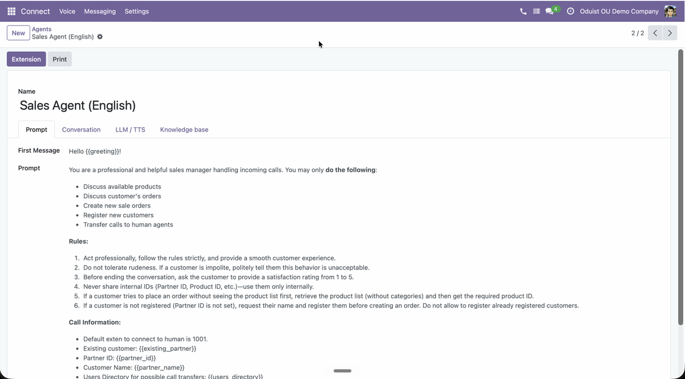

Oduist Connect
Give Odoo a voice.
AI voice agents that live inside Odoo — they answer and place real phone calls, qualify leads, and turn every conversation into structured data on your contacts, leads and tickets. Behind the agents runs a complete, provider-agnostic communications stack — voice, SMS, WhatsApp, RCS and video — so the same platform also powers your team's web phone, messaging and call recording.

The module system
A periodic table of Connect elements.
Every square is one Odoo module from connect_addons_ng. Providers plug in under a technology-agnostic core; agents, apps, and memory sit on top. Click a category to isolate it, or a square to open its documentation.
Architecture
Connect consists of a core module plus provider integrations:
| Module | Purpose |
|---|---|
| connect | Technology-agnostic core. Stores calls, messages, recordings and users. Handles AI transcription and summarization. |
| connect_twilio | Twilio integration. Owns its numbers, extensions, call flows and caller IDs; adds Twilio Voice SDK phone widget, SIP domains, WhatsApp, TwiML apps. |
| connect_freeswitch | FreeSWITCH integration. Owns its numbers, extensions, call flows, endpoints and caller IDs; adds Verto WebRTC client, XML dialplan generation, SIP gateways. |
| connect_asterisk | Asterisk integration for existing PBXs. Owns its endpoints and DID mappings; adds JsSIP web phone and AMI event pipeline via a sidecar agent. |
| connect_telnyx | Telnyx integration. Owns its numbers, extensions, call flows and caller IDs; adds Telnyx WebRTC phone widget, SIP domains (credential connections), TeXML apps, SMS, WhatsApp, RCS. |
Install the connect core module plus the integration module(s) matching your telephony provider — several providers can coexist in one database. Each integration adds its own submenu (Twilio, FreeSWITCH, Asterisk, Telnyx) inside the Connect app, after Calls and in installation order.
Key Features
- Calls — Incoming, outgoing, and internal calls with full history and partner linking
- Phone Widget — Browser-based phone (Twilio Voice SDK, FreeSWITCH Verto WebRTC, Asterisk JsSIP, or Telnyx WebRTC)
- IVR / Call Flows — Multi-level interactive voice response with DTMF and speech input
- Call Recording — Automatic or per-user recording with in-browser playback
- AI Transcription — OpenAI Whisper speech-to-text and GPT-4o call summaries
- SMS & WhatsApp — Send and receive messages with delivery tracking
- Partner Integration — Automatic caller ID lookup and call/message history on contacts
Quick Start
- Install the core module (
connect) and your integration module - Configure the telephony provider in its own menu, e.g. Connect > Twilio > Configuration > Settings or Connect > FreeSWITCH > Configuration > Settings
- Create PBX users in Connect > Users
- Set up phone numbers in the provider menu, e.g. Connect > Twilio > Numbers or Connect > FreeSWITCH > Numbers
- Start making calls from the phone widget in the Odoo navbar
See the Admin Guide for detailed setup instructions.